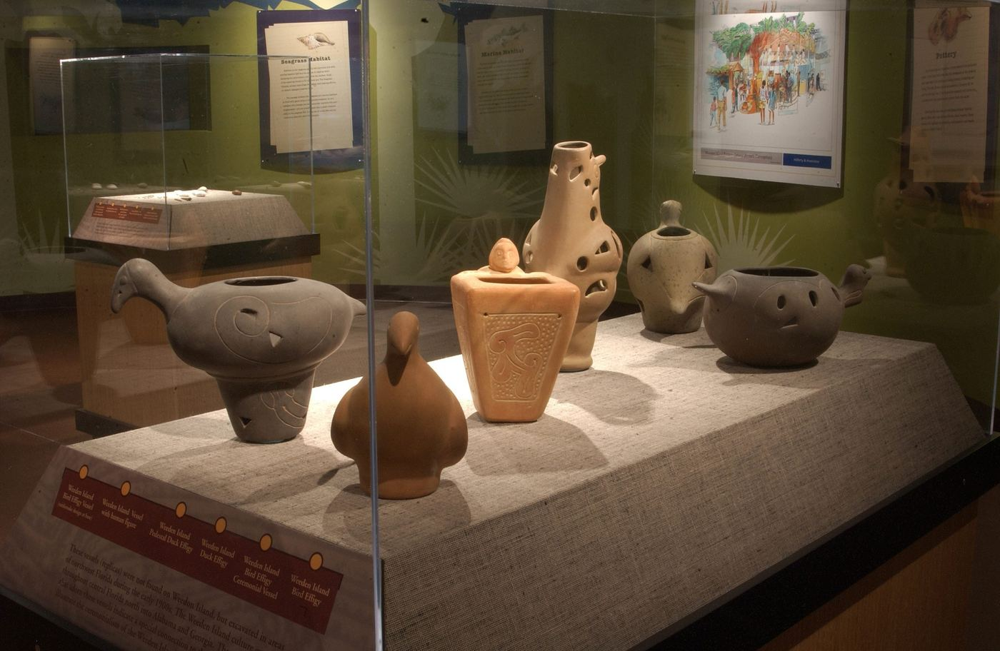
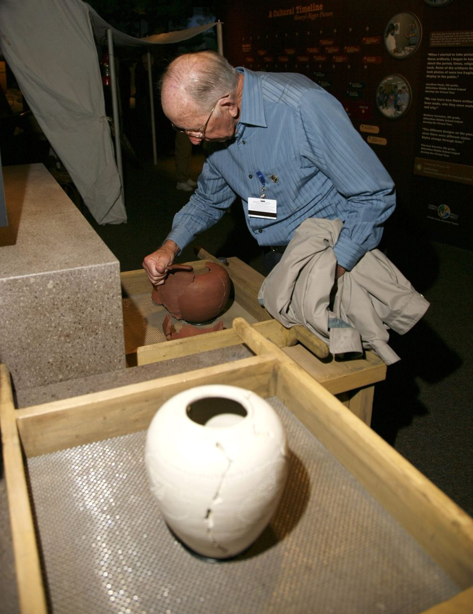
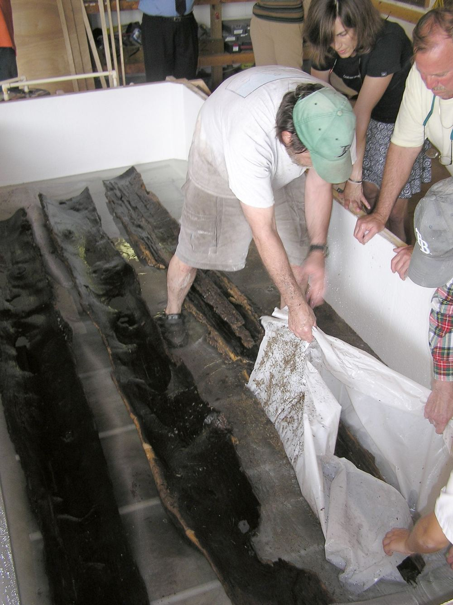

Home / History
History and archaeology
Indigenous peoples lived here for thousands of years. Today the preserve protects what they left behind.
Weedon Island through time
The natural world and people have been linked here for a very long time, and the evidence is still in the ground.
- Thousands of years ago
People of the bay
Prehistoric peoples thrive on the fish, shellfish, plants and mammals of Tampa Bay's wetlands, islands and estuaries.
- Lasting some 800 years
The Weeden Island culture
Their descendants become the Weeden Island culture, known for ceremonial and artistic pottery and burial with associated goods.
- AD 690 to 1010
A pine canoe is carved
The radiocarbon date of the dugout found in the preserve, made by people of the Manasota culture.
- Late 1800s onward
Homesteaders, speakeasies and movies
Homesteaders arrive, followed by speakeasies, a Hollywood movie studio and, in the 1930s, an airport.
- Late 1950s
Mosquito ditches
Miles of ditches are dug through the wetlands. They are still part of the landscape.
- 1992
The Friends of Weedon Island
A nonprofit forms to support the conservation and protection of the preserve.
- 2001 and 2011
The canoe is found, then raised
A local resident discovers the canoe in 2001. Archaeologists and volunteers excavate it in 2011.
- Today
A place to remember
3,195 acres protected for current and future generations.
Yat Kitischee
An excavated site in the preserve, Yat Kitischee is an excellent example of a small hamlet on Old Tampa Bay during the Manasota culture period.
Artifacts from the site investigation are on display in the Center's exhibit gallery. You'll also see "Weeden," an alternate spelling, used for the island's ancient culture.

The prehistoric canoe
The Weedon Island canoe is far longer than any other dugout found in Florida, and the only one directly associated with a saltwater environment.
A local resident first noticed it in the shoreline in 2001. In 2011, archaeologists and volunteers excavated a pine dugout measuring 12.17 meters, or 39.9 feet, from bow to broken stern. Mangrove roots and oyster growth had damaged it, and its sides had deteriorated.
Radiocarbon testing dated it to between AD 690 and 1010. Its makers are considered to belong to the Manasota culture, a prehistoric Native American people who hunted and fished the bay and left shell mounds along the coast. How the canoe was used is still being studied.
The Friends of Weedon Island and the Alliance for Weedon Island Archaeological Research and Education partnered on its long and expensive preservation. A conservation tank funded by the Friends and overseen by AWIARE held the canoe's sections in a bath of polyethylene glycol. The canoe is now on view at the Center.


Go deeper
Three ways to explore the island's story from home.
Watch the film
Gulf Islanders: The Story of Weedon Island, made possible by the Friends of Weedon Island.
Watch on YouTubeExplore the StoryMap
The History of Weedon Island, an interactive map story by Kathleen Gilmore of AWIARE.
Open the StoryMapRead the book
The Weedon Island Story, the preserve's own publication. Paper copies are at the Center.
Read the PDFResearch partners
AWIARE
The Alliance for Weedon Island Archaeological Research and Education promotes long-term archaeological research, scientific exploration and public education at the preserve and along the Gulf coast.
Visit AWIAREFlorida Public Archaeology Network
FPAN's West Central region promotes the conservation, study and public understanding of Florida's archaeological heritage, on land and underwater.
Visit FPAN West CentralFriends of Weedon Island
Since 1992, the Friends have supported programs, events and projects at the preserve in close partnership with Pinellas County.
Visit the Friends